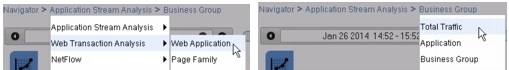
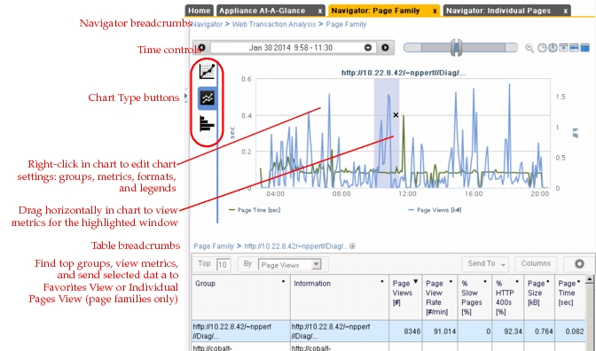

Navigators Navigators enable you to investigate, explore, and examine virtually any type of data stored on an appliance. Each Navigator view has a data table and a chart that updates when you select data in the table. For information about the data shown in Navigators, see: Metric Definitions Metric Concepts Group Drill-Down Key Concepts: Web Transaction Analysis Response Time Composition Chart See also WTA (Web Transaction Analysis) Navigators. Important Notes Note the following: Navigator support for downloading packets is limited to Individual Page Views. You cannot download packets for optimized page views (that is, page views derived from SteelFlow WTA data rather than packets observed directly on the AppResponse monitoring interfaces). The Individual Page Views Navigator is not shown in the sidebar treeview. To open this, open a Web Transaction Analysis Navigator (such as Page Families), select a group in the table, and click Send To > Individual Page Views. You can easily navigate through different types of data using the breadcrumbs at the top of the Navigator.  To send data of interest to a Favorites View, select the data, click Send To, and select New Favorites View or an existing view. It is good practice to rename each Favorites View with a descriptive label (right-click in the tab or click in the space between the tab label and the Close (x) button). Workflow Description The following steps outline the general workflow: 1) Select one or more groups in a QuickView or Navigator that you want to investigate. 2) Open the data in a Navigator (for example, double-click on the selected group(s) in a QuickView). 3) Explore and analyze the data of interest. The general workflow is to select data in the table (bottom) and analyze the data in the chart (top). You can also do the following: – View data in different charts – Drill down to data of interest using the Breadcrumbs – Find top groups based on specific metrics – Send data of interest to a new Favorites View – Highlight a time region in the chart. The data table and available drilldowns then show data for the highlighted region only. – Send page families to the Individual Page Views Navigator (Page Family and Web Application views only) Figure 1 Navigator View (Example) 